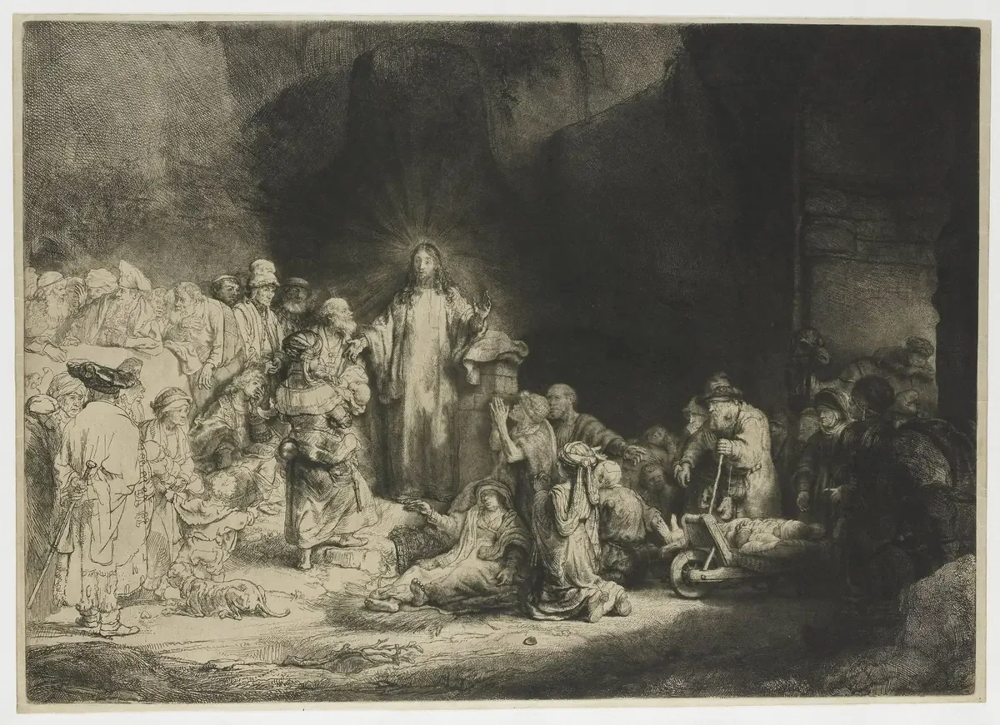
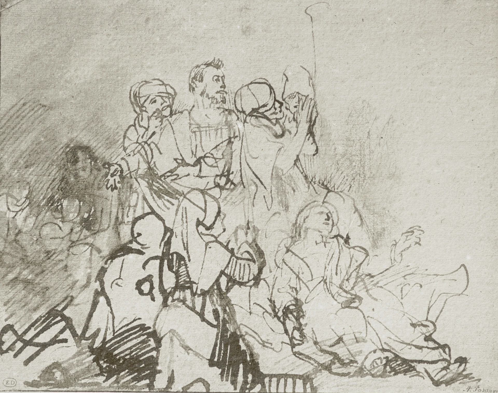
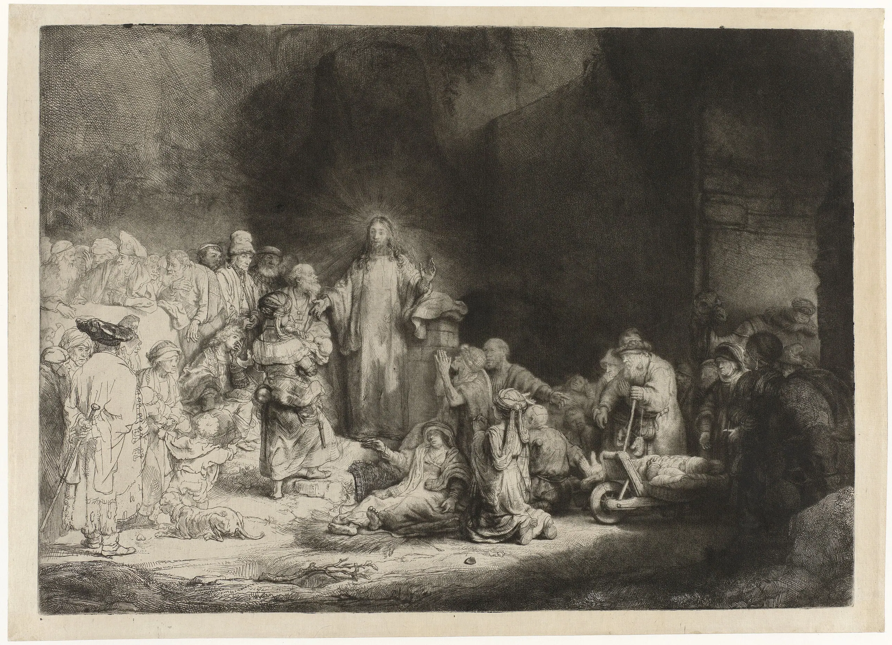
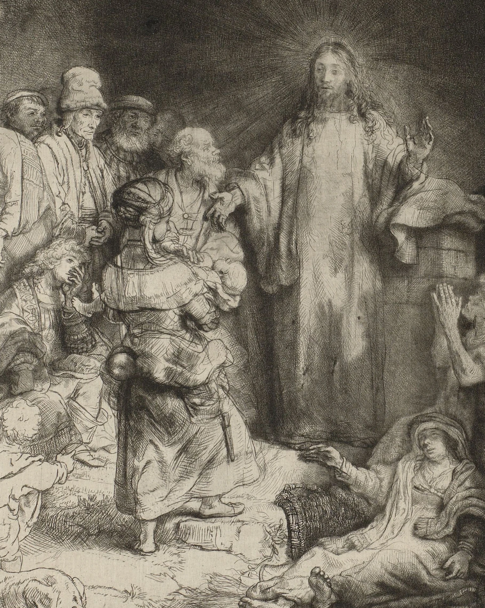
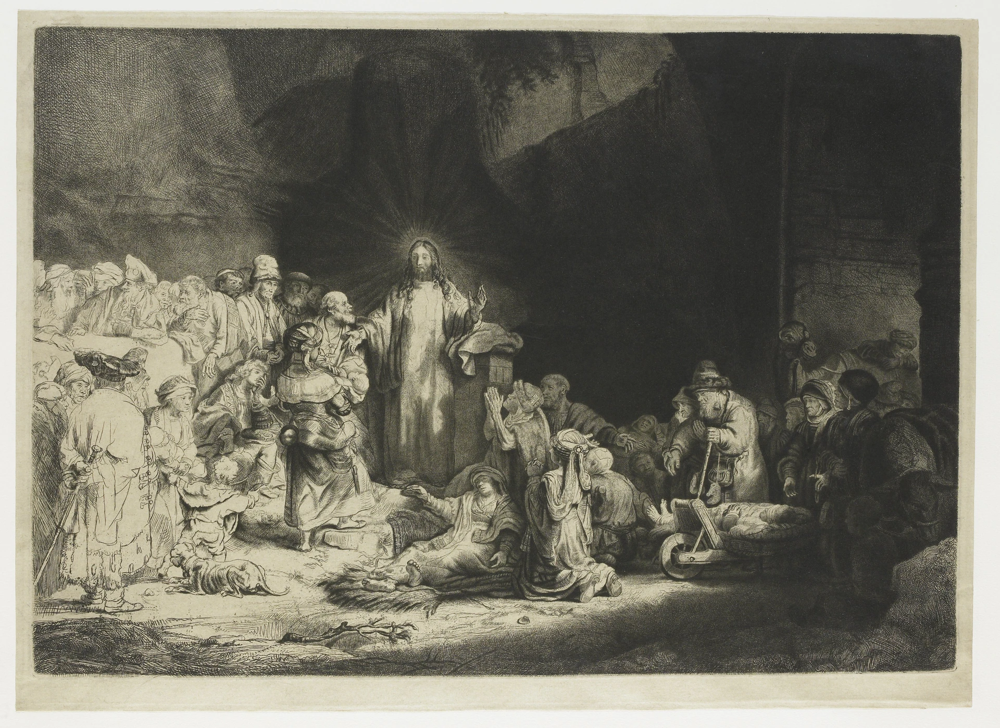
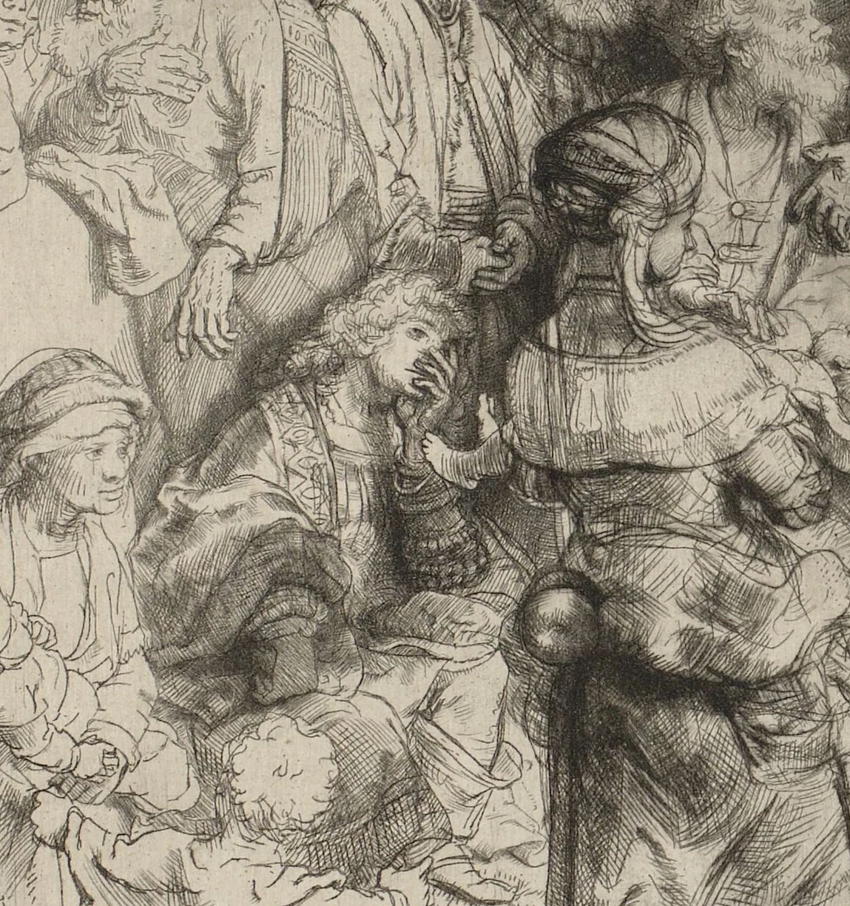
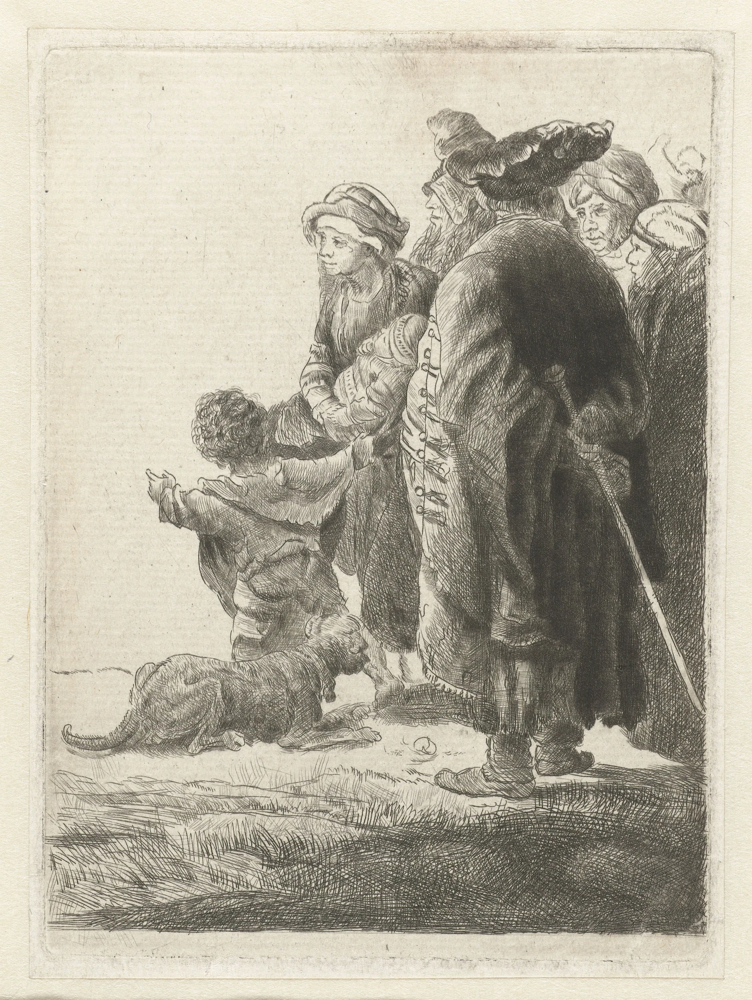

아직 펼치지 않은 카드빛과 어둠 사이의 얼굴 · 5렘브란트 「100길더 판화」렘브란트의 이 판화 한 장에는 성경의 여러 장면이 한꺼번에 들어 있어요. ‘100길더’라는 별명은 어디서 왔을까요?아주 비싸게 팔렸다는 판화래!
1648년 무렵네덜란드 암스테르담 · 동판화(한 동판으로 찍은 여러 장이 여러 미술관에)
렘브란트 「100길더 판화」
1648년 무렵 암스테르담에서, 렘브란트(Rembrandt)는 동판 한 장에 마태복음 19장의 여러 장면을 함께 새겼어요. 아기를 안은 엄마를 제자가 막아서고, 예수는 손을 내밀어 맞아요. 빛 쪽으로 모여드는 사람들 사이에서, 성경 속 장면들을 하나씩 찾아보세요.
렘브란트가 동판에 새겨 찍은 그림이야. 한 장 안에 성경 이야기가 여러 개 숨어 있대. 아기 엄마, 생각에 잠긴 사람, 어두운 문간의 낙타까지 하나씩 찾아볼까?
검수 전 시안이에요(기준서 1판). 그림 속 인물이 누구인지는 누가 그렇게 보는지 밝혔고, 해설마다 다른 것은 따로 적었어요. 상상은 ‘눈 감고 상상해 보기’에만 썼어요.
시안 확인용카드 단계 미리 보기
1
습작에서 동판으로
렘브란트(Rembrandt, 1606~1669)는 이 장면을 동판에 새기기 전에 펜으로 아픈 사람들의 무리를 먼저 그려 보았어요. 사진은 그 습작을 옛 유리 슬라이드(환등기로 크게 비춰 보던 유리 사진)로 찍은 것이에요. 슬라이드에는 ‘1649년 이전’, ‘베를린 판화 전시관’이라고 적혀 있어요.
판화는 1648~1649년 무렵 마쳤어요. 산(금속을 녹이는 약품)으로 선을 부식시키는 에칭, 바늘로 동판을 직접 긁는 드라이포인트, 조각칼로 파는 뷰린을 함께 썼어요. 오벌린 대학 미술관은 렘브란트가 일본 종이를 쓴 첫 서양 판화가들 가운데 하나였다고 적어요.

렘브란트는 동판에 새기기 전에 펜으로 먼저 그려 봤대.
물어보기이 그림에서 두 손을 모은 사람을 찾을 수 있어?
2
빛 쪽으로 모여드는 사람들
판화 한 장에 마태복음 19장의 여러 장면이 함께 있어요. 큰 무리가 따라오자 예수가 병을 고쳐 주었고, 바리새인들은 예수를 시험하려고 물었고, 사람들은 예수가 손을 얹고 기도해 주기를 바라며 아이들을 데려왔어요(마태복음 19장).
대영박물관 해설은, 렘브란트와 같은 시대의 시인 H. F. 바테를로스가 파리의 판화 한 장에 손으로 적은 시를 근거로, 이 판화를 마태복음 19장 전체의 이야기로 읽어요.
여러분은 빛 쪽으로 모여드는 사람들 사이에 섰어요. 판화 속 장면들을 하나씩 눌러 보고, 어두운 곳은 ‘가까이 보기’로 들여다보세요.

렘브란트, 「100길더 판화」, 1648년 무렵, 에칭·드라이포인트·뷰린, 일본 종이 · 암스테르담 국립미술관 RP-P-1962-1 · 판화: 렘브란트 · 사진: 암스테르담 국립미술관 · 퍼블릭 도메인 · 위키미디어 공용
그림 위의 숫자나 아래 번호를 눌러 보세요.
일곱 곳을 다 찾았어요. 동판 한 판에 마태복음 19장의 이야기가 모여 있었어요.
마태복음 19장의 그날, 아기를 안고 예수께 가던 엄마라면 베드로가 막아설 때 어떻게 했을까요?
가운데 예수님이 환하게 빛나. 여러 사람이 예수님께 모여들어.
물어보기아기를 안은 엄마를 찾았어?
3
‘100길더’라는 별명
‘100길더’라는 이름이 언제, 어떻게 붙었는지는 자료마다 달라요. 길더는 그때 네덜란드의 돈 단위예요. 오벌린 대학 미술관은 이 이름이 18세기 초부터 쓰였지만 그 시작은 알 수 없다고 적어요.
대영박물관 해설은 1654년 안트베르펜의 메이선스(Meyssens)가 브뤼허 주교에게 보낸 편지를 소개해요. 편지는 이 판화를 ‘렘브란트가 낸 판화 가운데 가장 귀한 것’이라 부르고, 네덜란드에서 여러 번 100길더 넘게 팔렸다고 적었어요. 프라하 국립미술관은 한 장이 100길더라는 큰돈에 팔린 데서 이름이 왔다고 적어요.

아주 귀한 판화라서 ‘100길더’라는 별명이 붙었대. 언제부터인지는 정확히 몰라.
물어보기얼굴을 손으로 괸 사람은 무슨 생각을 하고 있을까?
4
닳은 동판의 마지막
100년도 더 지나 많이 닳은 동판은, 판화를 즐겨 새기던 윌리엄 베일리(William Baillie) 대위의 손에 들어갔어요. 렘브란트가 새긴 동판을 베일리가 손봐 1775년에 다시 찍었기 때문에, 암스테르담 국립미술관은 이 판화에 두 사람의 이름을 함께 적어요.
대영박물관 해설에 따르면 그 뒤 동판은 여러 조각으로 잘렸어요.

오래 쓴 동판은 닳아. 베일리 아저씨가 손봐서 다시 찍었대.
물어보기그다음 동판은 어떻게 되었을까?
눈 감고 상상해 보기
잉크 냄새가 나는 렘브란트의 작업실, 묵직한 압착기가 천천히 돌아가요. 축축한 종이를 동판에서 살며시 떼어 내면, 어둠 속에서 하나둘 얼굴이 떠올라요. 빛 쪽으로 손을 뻗는 사람, 망설이는 엄마, 생각에 잠긴 젊은이.
눈을 감아 봐. 잉크 냄새가 나. 종이를 살살 떼어 내면, 그림 속 사람들이 하나씩 나타나.
나의 자리
빛 쪽으로 다가가는 사람들 가운데, 나는 어디쯤 서 있을까요?
그림 속에서 너는 누구 옆에 서고 싶어?
마음에 닿는 한 줄을 고르거나 직접 써 보세요. 한 줄을 남기면 이 자리의 도장이 찍혀요. 이 기기에만 저장돼요.
더 깊이
이야기를 보다 궁금해질 만한 것들이에요. 답을 읽거나 짧은 영화로 보세요.

얼굴을 괸 젊은이는 왜 근심하나요?
동판은 왜 닳아 버렸나요?
뒷이야기
아직 펼치지 않은 이야기예요. 누르면 이야기가 펼쳐지고 색이 돌아와요. 더 알고 싶으면 근거를 따라가 보세요.
다 펼치면, 다음에 오실 때 새 이야기가 찾아와요.
오늘의 뒷이야기는 여기까지예요. 다음에 오시면 새 이야기가 기다리고 있어요.
펼친 뒷이야기 · 누르면 다시 볼 수 있어요
더 찾아보기
베일리가 베낀 한 부분

거울처럼 뒤집힌 모사 암스테르담 국립미술관은 이 작은 판화를, 윌리엄 베일리가 렘브란트 판화의 한 부분을 거울처럼 뒤집어 베낀 것으로 설명해요. 아기를 안은 여인, 앞으로 걸어가는 아이, 엎드린 개, 칼을 찬 남자가 보여요.
기록마다 다른 점
부자 청년은 어디에 영어 위키백과(암스테르담 국립미술관 인용)와 이 카드 책 앞면은 오른쪽 문으로 떠나가는 사람을 부자 청년으로 봐요. 대영박물관·오벌린 대학 미술관·스마트히스토리·아트웨이는 가운데 앉아 얼굴을 괸 젊은이를 부자 청년으로 봐요.
이름의 시작 오벌린 대학 미술관은 ‘알 수 없다’, 대영박물관은 ‘일찍부터 쓰였을 수 있다’, 프라하 국립미술관은 ‘한 장이 100길더에 팔려서’, 루브르의 렘브란트 누리집은 ‘렘브란트가 동판을 판 값에서’라고 적어요.
마친 해 대영박물관과 암스테르담 국립미술관은 1648년 무렵, 오벌린 대학 미술관은 1649년 무렵이라고 적어요.
잘린 조각 수 영어 위키백과와 앞면, 테 파파 박물관은 네 조각이라고 하지만, 대영박물관 해설은 ‘여러 조각’이라고만 적어요.
베일리는 어느 나라 사람 피츠윌리엄 박물관은 영국, 클리블랜드 미술관은 아일랜드 사람으로 적어요.
바리새인의 물음 대영박물관 해설은 이혼을 두고 따진 일(19장 3절)로, 프라하 국립미술관은 안식일을 어겼다고 따진 일(마태복음 12장)로 적어요.
크기 대영박물관 281×388mm, 암스테르담 국립미술관 270×387mm, 메트로폴리탄 미술관 280×393mm(판), 프라하 국립미술관 275×395mm로 적어요.
나귀 목의 그늘 대영박물관의 판화는 오른쪽 나귀 목에 그늘을 더하기 전의 첫 상태예요. 같은 기록 안에서도 설명은 ‘빗금’, 해설은 ‘평행선’이라고 달리 적어요.
함께 읽는 말씀
말씀은 뜻만 옮기고, 본문은 대한성서공회 개역개정으로 이어 드려요.
마태복음 19장 큰 무리와 병 고침(2절), 바리새인의 물음(3절), 어린아이들을 막지 말라(13~15절), 근심하며 돌아간 부자 청년(16~22절), 낙타와 바늘귀(24절)가 이어져요.
직접 가 보기
확인한 날 · 2026년 11월 18일 · 바뀌기 쉬운 정보라 정기적으로 다시 확인해요
판화는 한 장 한 장 여러 미술관에 흩어져 있어요. 종이 판화는 빛에 약해 늘 걸려 있지는 않으니, 미술관 누리집에서 크게 확대해 보세요.
판화 속 일곱 곳 금박
판화 속 일곱 곳을 모두 찾아 읽으면 카드에 금박이 입혀져요.
판화 속 일곱 곳을 모두 찾아 읽기
그 엄마의 자리에서 채색
둘 가운데 하나만 해도 카드가 채색돼요.
아기를 안은 엄마라면 어떻게 했을지 고르기
아이와 함께 ‘영화처럼 보기’를 끝까지 보기
근거 보기 (20)
- 암스테르담 국립미술관: RP-P-1962-1 — 1648년 무렵, 에칭·드라이포인트·인그레이빙, 일본 종이, 270×387mm, 부자와 가난한 사람·젊은이와 노인·건강한 사람과 아픈 사람을 그리스도 둘레에
- 암스테르담 국립미술관: RP-P-1961-923 — 렘브란트·윌리엄 베일리, 1648년 무렵과 1775년, 일본 종이
- 암스테르담 국립미술관: RP-P-1957-394-A — 윌리엄 베일리, 렘브란트 판화 한 부분의 거울상 모사, 151×112mm
- 대영박물관: F,4.154 — 1648년 무렵, 에칭·드라이포인트·뷰린, 일본 종이, 281×388mm, 첫 상태(나귀 목 그늘 전), 파리의 판화 한 장에 손으로 적힌 바테를로스의 시, 베드로가 첫 엄마를 막음, 생각에 잠긴 부자 청년, 낙타, 바리새인(이혼에 대한 물음), 1654년 안트베르펜의 메이선스가 브뤼허 주교에게 보낸 편지(가장 귀한 판화, 네덜란드에서 여러 번 100길더 넘게 팔림), 18세기 후반 더 찍을 보람이 없을 만큼 닳은 동판, 아마추어 판화가 베일리가 손본 동판과 잘린 조각
- 오벌린 대학 앨런 기념 미술관: 마태복음 19:2·3~12·13~15·16~24와 장면들, 일본 종이를 쓴 첫 서양 판화가들 가운데 하나, 이름의 시작은 알 수 없음(18세기 초부터), 1649년 무렵
- 아트웨이(마를레인 헹엘라르로크마커): 망설이는 두 번째 엄마와 걸음마 아이, 베드로, 부자 청년, 문간의 낙타, 손수레, 바리새인
- 프라하 국립미술관: 한 장이 100길더에 팔린 데서 온 이름, 어두운 아케이드의 낙타, 바리새인이 안식일을 어겼다고 따짐(마태복음 12장으로 적음), 275×395mm
- 스마트히스토리: 마태복음 19장의 여러 구절, 얼굴을 손에 묻은 잘 차려입은 젊은이(부자 청년일 수 있음), 판화는 대개 1길더 미만이라 100길더는 엄청난 값(열쇠 1)
- 대한성서공회 개역개정: 마태복음 19장
- 위키미디어 공용: 습작 유리 슬라이드(프란츠 슈퇴트너 출판사, ‘1649년 이전, 베를린 판화 전시관’ 글씨), 파일 이름 ‘100길더 판화의 병자 무리 습작’(첫째 장면 길잡이)
- 렘브란트의 집 미술관 기록 보관: Rembrandt the Entrepreneur — 솜씨 좋은 장인이 1년에 250길더쯤 벌었음(열쇠 1)
- 메트로폴리탄 미술관: The Hundred Guilder Print — 마태복음 19장의 여러 장면을 엮음(열쇠 2), 280×393mm(판)
- 메트로폴리탄 미술관: 판화 재료와 기법 · 에칭 — 잉크를 선에 채우고 겉을 닦아, 축축한 종이를 덮어 압착기로 찍음(열쇠 3)
- 메트로폴리탄 미술관: 드라이포인트 — 선 양쪽의 거스러미가 잉크를 머금어 짙게 찍히지만 금방 닳아 좋은 판은 열두 장 남짓(열쇠 3)
- 테 파파 박물관(뉴질랜드): 베일리 판 — 거듭 찍혀 많이 닳은 동판(열쇠 3), 네 조각(기록마다 다른 점)
- 피츠윌리엄 박물관: 베일리 판 — 베일리(영국, 1723~1810)(기록마다 다른 점)
- 클리블랜드 미술관: 베일리 판 가운데 부분 — 베일리(아일랜드, 1723~1810)(기록마다 다른 점)
- 루브르 박물관 렘브란트 누리집: Christ Preaching (The Hundred Guilder Plate) — 렘브란트가 동판을 판 값에서 온 이름이라고 적음(기록마다 다른 점)
- 아트웨이 소식지(2018년 12월): 기독교 신앙과 미술·문화의 관계를 알리는 것이 목적(엄마 점의 풀이)
- 영어 위키백과: Hundred Guilder Print — 길잡이로만(오른쪽 문의 부자 청년, 네 조각)
그림·사진·소리 출처
- 판화: 렘브란트 · 사진: 암스테르담 국립미술관 · 퍼블릭 도메인 · 위키미디어 공용
- 그림: 렘브란트 · 슬라이드: 프란츠 슈퇴트너 출판사 · 퍼블릭 도메인 · 위키미디어 공용
- 판화: 렘브란트 · 사진: 암스테르담 국립미술관 · 퍼블릭 도메인 · 위키미디어 공용
- 판화: 렘브란트·윌리엄 베일리 · 사진: 암스테르담 국립미술관 · 퍼블릭 도메인 · 위키미디어 공용
- 판화: 윌리엄 베일리(렘브란트를 따라) · 사진: 암스테르담 국립미술관 · 퍼블릭 도메인 · 위키미디어 공용
- 판화: 렘브란트 · 사진: 암스테르담 국립미술관 · 퍼블릭 도메인 · 위키미디어 공용
- 판화: 렘브란트 · 사진: 암스테르담 국립미술관 · 퍼블릭 도메인 · 위키미디어 공용
- 판화: 렘브란트 · 사진: 암스테르담 국립미술관 · 퍼블릭 도메인 · 위키미디어 공용
- 판화: 렘브란트 · 사진: 암스테르담 국립미술관 · 퍼블릭 도메인 · 위키미디어 공용
- 판화: 렘브란트 · 사진: 암스테르담 국립미술관 · 퍼블릭 도메인 · 위키미디어 공용
- 판화: 렘브란트 · 사진: 암스테르담 국립미술관 · 퍼블릭 도메인 · 위키미디어 공용
- 그림: 렘브란트 「100길더 판화」(1647~1649년 무렵) · 퍼블릭 도메인 · 위키미디어 공용
‘처음 만나는 기독교 문화’의 깊은 카드예요. 카드 단계와 남긴 글은 이 기기에만 저장돼요.